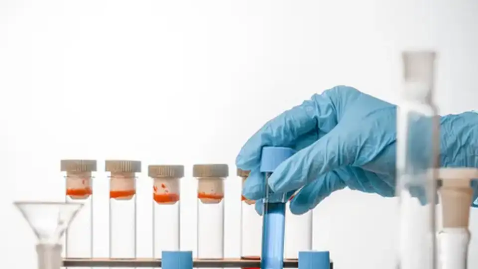

Waters plugs Claude into the lab: AI Link brings Anthropic’s MCP to instruments and joins the Model Hardware Standard
Waters Corporation has launched Waters AI Link, a software capability that brings Anthropic’s Model Context Protocol (MCP) to its waters_connect informatics platform — announced on Tuesday. Scientists can now direct Waters instruments through proprietary agents linked to large language models and Claude Science, and Waters has joined Anthropic’s Model Hardware Standard (MHS) research program to let agents operate lab hardware directly.
The pitch is simple: AI can now dream up experiments faster than any lab can run them. “AI can generate hypotheses faster than any lab can test them, so the bottleneck has moved from computation to the bench,” said Dave Leitham, Waters’ vice president of informatics, in the announcement. Every one of those hypotheses becomes a physical sample that has to be separated and measured — which means more instrument runs, more columns, more data, and a much bigger role for the machines themselves.
What AI Link actually does
Waters AI Link brings Anthropic’s MCP — the open standard that connects AI models and agents to software and data through a common interface — to waters_connect, Waters’ cloud-enabled platform for instrument control, data acquisition, and scientific workflows in liquid chromatography and mass spectrometry (LC-MS). Customers can link waters_connect to Claude, including Claude Science, Anthropic’s AI workbench for scientific research, and to other large language models and AI agents through a natural-language interface.
In practice, agents can create methods, run acquisitions, and process results without custom integration — including orchestration of connected devices such as sample-preparation systems. For research settings, that enables fully automated lab-in-the-loop cycles: autonomous physical testing of AI-generated hypotheses, with measurement capture feeding directly back to the model, which hones its predictions and designs the next experiment. For development settings, Waters promises AI-enhanced method development, characterization, and testing with “significantly less manual intervention”, compressing timelines from weeks to days.
MCP is only half the story
Waters has also joined Anthropic’s Model Hardware Standard (MHS) research program, which targets the harder problem: letting AI agents safely operate physical laboratory devices. MHS is an open specification, developed by Anthropic with scientific research institutions, that describes what a device can do, which parameters an agent may change, and which safety limits it must obey. Connecting proprietary instruments typically takes weeks or months of custom software engineering; Anthropic says MHS cuts that integration to hours or minutes. Once enabled, agents can run experiments overnight, adjust parameters as results arrive, recover from instrument errors without intervention, and scale research around the clock.
The context here is a standards race. MCP — released in November 2024 and since adopted by OpenAI, Google DeepMind, and Microsoft — standardized how AI reaches software tools and data. MHS is the hardware counterpart, aimed at the physical world: instruments, liquid handlers, robotic arms. Anthropic has been battle-testing it with the Howard Hughes Medical Institute’s Janelia Research Campus and invited other equipment makers into the research preview. Waters, a NYSE-listed maker with roughly 15,000 employees and deep roots in regulated lab environments, is a heavyweight early joiner — and notably one whose products live under strict compliance regimes, not just research benches.

The compliance moat
There’s a strategic angle beyond the research story. Work that starts on waters_connect can transition into Waters’ Empower software, the compliant system of record, as a molecule advances toward quality control — carrying its audit trail into regulated settings. Waters’ claim: no other company can support an AI-directed experiment from the research bench through validated release, for small molecules and biologics alike, in a single continuous workflow. In a world where AI agents start driving instruments, the audit trail — who told the machine what, and when — may matter as much as the result. Waters is positioning itself as the place where that record lives.
Available now
Waters AI Link is available now for early access, with general availability in November for waters_connect Software customers. Participation in the MHS research program is effective immediately. Waters says the AI-driven workflows are already a new and fast-growing source of demand for its instruments and consumables — a reminder that the lab-automation economy runs both ways: the agents need the instruments, and the instruments need the agents.
Sources: Waters Corporation (PR Newswire) — “Waters Launches AI Link, Advancing AI-Enabled LC-MS Workflows from Research to Release” (October 13, 2026); R&D World — “Anthropic wants Claude to run life sciences R&D. Now it is wiring AI agents into the lab.” (background on MHS); The Register — “Anthropic proposes plumbing spec to link AI agents to lab kit and robots” (August 28, 2026, background on MHS).